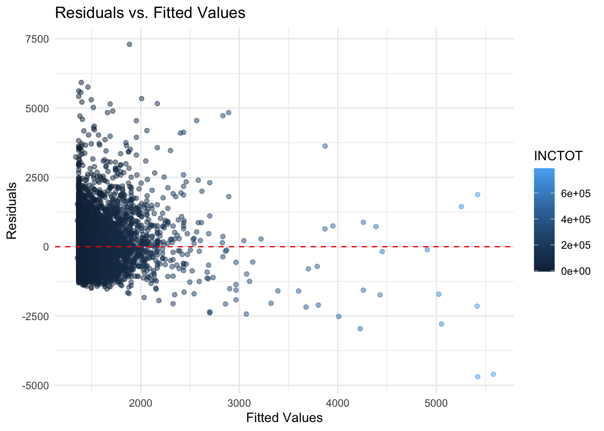
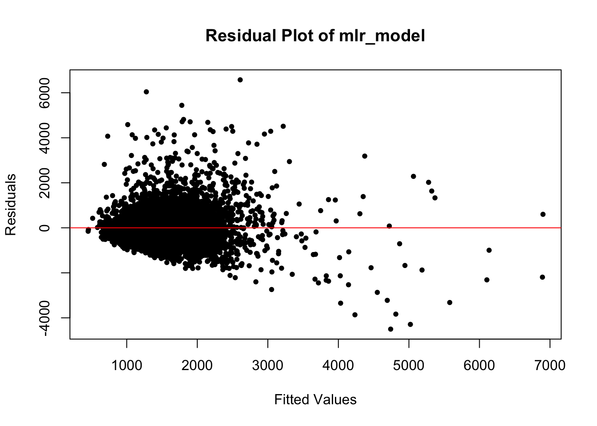
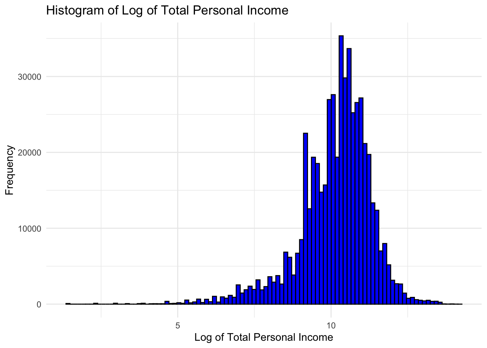
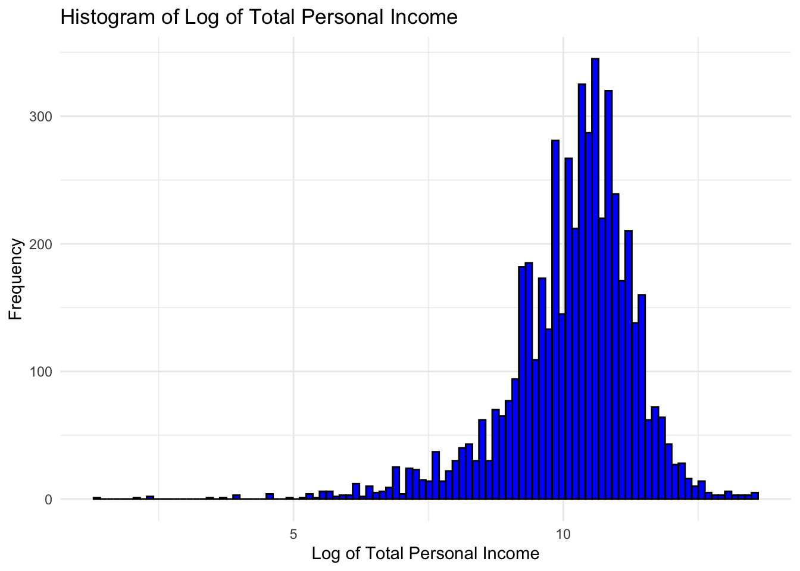

Roughly see the relationship between income and rent
-The horizontal axis represents the total income (INCTOT), which is the predictor. -The vertical axis represents the rent paid (RENTGRS), which is the response. -The purpose of creating this scatter plot is to assess whether there is a linear or non-linear relationship between total income and rent paid in a general way. -There seems to be a large concentration of points towards the lower end of the income scale with lower rents, which suggests that a significant portion of the dataset includes individuals with lower income and rent levels. -The plot does not clearly show a distinct linear trend, suggesting that the relationship between these variables might be non-linear
Simple linear model
# A tibble: 2 × 5
term estimate std.error statistic p.value
<chr> <dbl> <dbl> <dbl> <dbl>
1 (Intercept) 1370. 14.2 96.2 0
2 INCTOT 0.00532 0.000218 24.4 2.29e-125# A tibble: 1 × 12
r.squared adj.r.squared sigma statistic p.value df logLik AIC BIC
<dbl> <dbl> <dbl> <dbl> <dbl> <dbl> <dbl> <dbl> <dbl>
1 0.0902 0.0901 896. 595. 2.29e-125 1 -49310. 98626. 98646.
# ℹ 3 more variables: deviance <dbl>, df.residual <int>, nobs <int># A tibble: 6,001 × 8
RENTGRS INCTOT .fitted .resid .hat .sigma .cooksd .std.resid
<dbl> <dbl> <dbl> <dbl> <dbl> <dbl> <dbl> <dbl>
1 1200 0 1370. -170. 0.000253 896. 0.00000455 -0.190
2 253 49200 1632. -1379. 0.000174 896. 0.000206 -1.54
3 3000 89900 1848. 1152. 0.000326 896. 0.000269 1.29
4 2242 1500 1378. 864. 0.000246 896. 0.000114 0.964
5 1403 34000 1551. -148. 0.000168 896. 0.00000228 -0.165
6 1450 2000 1381. 69.4 0.000244 896. 0.000000731 0.0774
7 2089 10300 1425. 664. 0.000212 896. 0.0000584 0.741
8 1103 50000 1636. -533. 0.000175 896. 0.0000310 -0.595
9 968 50000 1636. -668. 0.000175 896. 0.0000486 -0.746
10 2637 6000 1402. 1235. 0.000228 896. 0.000216 1.38
# ℹ 5,991 more rows- The R-squared value is 0.09, which means that approximately 9% of the variability in the rent paid (RENTGRS) can be explained by the total income (INCTOT). This is a relatively low R-squared value, indicating that the linear model does not explain a large portion of the variability in the rent.But it is fair, because we only include one predictor here.
- The statistic value is 594, which is extremely high. This suggests that the overall significance of the model is strong, despite the low R-squared. This could be due to a large sample size, which can make even small relationships appear statistically significant.
Residual plot

- This diagram indicates that the spread of residuals appears to increase as the fitted values increase. This pattern indicates heteroscedasticity, which means that the variability of the residuals is not constant across levels of the predictor variable. In an ideal scenario, I’d want to see a consistent spread of residuals across all levels of fitted values, suggesting homoscedasticity.
Multiple linear regression
tidy_mlr <- tidy(mlr_model)
print(tidy_mlr)# A tibble: 25 × 5
term estimate std.error statistic p.value
<chr> <dbl> <dbl> <dbl> <dbl>
1 (Intercept) 138. 141. 0.978 3.28e- 1
2 INCTOT 0.000610 0.000290 2.10 3.57e- 2
3 KITCHENYes (shared or exclusive use) -6.18 90.9 -0.0680 9.46e- 1
4 ROOMS 46.5 5.37 8.66 6.15e-18
5 NFAMS 132. 13.7 9.65 6.82e-22
6 AGE -2.08 0.752 -2.76 5.81e- 3
7 MARSTMarried, spouse absent 49.7 68.5 0.725 4.69e- 1
8 MARSTMarried, spouse present 160. 35.4 4.52 6.45e- 6
9 MARSTNever married/single 105. 36.4 2.89 3.82e- 3
10 MARSTSeparated -8.89 67.7 -0.131 8.95e- 1
# ℹ 15 more rowsglance_mlr <- glance(mlr_model)
print(glance_mlr)# A tibble: 1 × 12
r.squared adj.r.squared sigma statistic p.value df logLik AIC BIC
<dbl> <dbl> <dbl> <dbl> <dbl> <dbl> <dbl> <dbl> <dbl>
1 0.284 0.281 797. 98.6 0 24 -48593. 97238. 97412.
# ℹ 3 more variables: deviance <dbl>, df.residual <int>, nobs <int>augmented_mlr <- augment(mlr_model)
print(augmented_mlr)# A tibble: 6,001 × 17
RENTGRS INCTOT KITCHEN ROOMS NFAMS AGE MARST RACE EMPSTAT FTOTINC
<dbl> <dbl> <fct> <dbl> <dbl> <dbl> <fct> <fct> <fct> <dbl>
1 1200 0 Yes (shared or … 4 1 16 Neve… Othe… Not in… 37800
2 253 49200 Yes (shared or … 3 1 63 Wido… White Employ… 49200
3 3000 89900 Yes (shared or … 7 1 76 Marr… White Employ… 98700
4 2242 1500 Yes (shared or … 5 4 24 Neve… White Not in… 1500
5 1403 34000 Yes (shared or … 3 1 54 Marr… White Employ… 79000
6 1450 2000 Yes (shared or … 3 1 33 Neve… Othe… Not in… 2000
7 2089 10300 Yes (shared or … 6 1 17 Neve… White Employ… 38300
8 1103 50000 Yes (shared or … 6 1 39 Neve… Othe… Employ… 50000
9 968 50000 Yes (shared or … 4 1 40 Divo… White Employ… 65600
10 2637 6000 Yes (shared or … 7 1 23 Marr… Two … Not in… 215000
# ℹ 5,991 more rows
# ℹ 7 more variables: REGION_CLASSIFIED <chr>, .fitted <dbl>, .resid <dbl>,
# .hat <dbl>, .sigma <dbl>, .cooksd <dbl>, .std.resid <dbl>- The R-squared value is 0.28, indicating that about 28% of the variability in the dependent variable is explained by the model. This is a significant improvement over the simple linear model previously discussed, suggesting that including more variables helps explain the variance in the dependent variable more effectively.
- The adjusted R-squared value is 0.2807292, which is very close to the R-squared value.Since the adjusted R-squared is almost identical to the R-squared, this implies that the additional predictors are indeed contributing valuable information.
- The statistic value is 98.57, which is very high and the p-value is 0, indicating that the model is statistically significant. It means that the likelihood of the regression results being due to chance is extremely low.
Multicollinearity concerns
GVIF Df GVIF^(1/(2*Df))
INCTOT 2.239087 1 1.496358
KITCHEN 1.026783 1 1.013303
ROOMS 1.099700 1 1.048666
NFAMS 1.103313 1 1.050387
AGE 1.849885 1 1.360105
MARST 1.876546 5 1.064966
RACE 1.198654 8 1.011389
EMPSTAT 1.350055 2 1.077923
FTOTINC 2.181999 1 1.477159
REGION_CLASSIFIED 1.129306 3 1.020474- Through the result, INCTOT (Total Income) and FTOTINC (Family Total Income) stand out as having higher multicollinearity indicators than the others. While considering the what constitutes the Family total income, it is fair multicollinearity happens. So we decide to exclude the FTOTINC in our model. With a GVIF^(1/(2*Df)) value of INCTOT approximately 1.50 and FTOTINC is about 1.47, a VIF between 1 and 5 suggests moderate indication of multicollinearity.
- Therefore, we decide to exclude the FTOTINC to avioud the multicollineariity problem.
Residual plot:

Heterskedasticity still exits as the spread of the residuals appears to be increasing with the fitted values. According to the diagram, the residuals seem to form a pattern (rather than being randomly dispersed), it indicates that the relationship between the predictors and the response variable is not entirely linear.
Log - log Model
Taking account into the possible non-linear relationship and the right-skwed distributions of our predictor and response variable, we take log to both of them.
RENTGRS:distribution of log(RENTGRS)

INCTOT: distribution of log(INCTOT)

Log-log model
Based on the previous MLR model, 1. we have applied a logarithmic transformation to both the rent and income variables to mitigate skewness in their distributions. But the problem is the logarithmic transformation necessitates all data points to be positive. Consequently, this has led to the exclusion of certain data samples that contained negative values. 2. previous models indicated the presence of numerous outliers within our dataset. To address this, we have refined our dataset to include only those records where rent and income fall within three standard deviations from their respective sample means to minimize the impact of extreme values on the model’s performance.
# A tibble: 24 × 5
term estimate std.error statistic p.value
<chr> <dbl> <dbl> <dbl> <dbl>
1 (Intercept) 5.14 0.123 41.9 0
2 log_INCTOT 0.133 0.00761 17.5 6.77e-67
3 KITCHENYes (shared or exclusive use) -0.00666 0.0605 -0.110 9.12e- 1
4 ROOMS 0.0418 0.00361 11.6 1.18e-30
5 NFAMS 0.0329 0.0101 3.25 1.15e- 3
6 AGE -0.00358 0.000555 -6.45 1.21e-10
7 MARSTMarried, spouse absent 0.120 0.0464 2.59 9.56e- 3
8 MARSTMarried, spouse present 0.204 0.0234 8.69 4.69e-18
9 MARSTNever married/single 0.109 0.0241 4.54 5.85e- 6
10 MARSTSeparated 0.0318 0.0448 0.710 4.78e- 1
# ℹ 14 more rows# A tibble: 1 × 12
r.squared adj.r.squared sigma statistic p.value df logLik AIC BIC
<dbl> <dbl> <dbl> <dbl> <dbl> <dbl> <dbl> <dbl> <dbl>
1 0.227 0.223 0.507 65.6 5.67e-266 23 -3813. 7675. 7839.
# ℹ 3 more variables: deviance <dbl>, df.residual <int>, nobs <int># A tibble: 5,167 × 16
log_RENTGRS log_INCTOT KITCHEN ROOMS NFAMS AGE MARST RACE EMPSTAT
<dbl> <dbl> <fct> <dbl> <dbl> <dbl> <fct> <fct> <fct>
1 5.53 10.8 Yes (shared or … 3 1 63 Wido… White Employ…
2 8.01 11.4 Yes (shared or … 7 1 76 Marr… White Employ…
3 7.72 7.31 Yes (shared or … 5 4 24 Neve… White Not in…
4 7.25 10.4 Yes (shared or … 3 1 54 Marr… White Employ…
5 7.28 7.60 Yes (shared or … 3 1 33 Neve… Othe… Not in…
6 7.64 9.24 Yes (shared or … 6 1 17 Neve… White Employ…
7 7.01 10.8 Yes (shared or … 6 1 39 Neve… Othe… Employ…
8 6.88 10.8 Yes (shared or … 4 1 40 Divo… White Employ…
9 7.88 8.70 Yes (shared or … 7 1 23 Marr… Two … Not in…
10 7.63 9.20 Yes (shared or … 3 1 61 Sepa… Blac… Not in…
# ℹ 5,157 more rows
# ℹ 7 more variables: REGION_CLASSIFIED <chr>, .fitted <dbl>, .resid <dbl>,
# .hat <dbl>, .sigma <dbl>, .cooksd <dbl>, .std.resid <dbl>- The adjusted R-squared is 0.223. This value looks modest. In practical terms, it suggests that the model doesn’t explain a large portion of the variance in the logarithm of rent. But in this social science and economic contexts, however, it is not uncommon to have lower R-squared values due to the complexity of human behavior and multiple unobserved factors. So we believe it is acceptable.
- The p-value for the overall model is extremely low, which is good. It indicates that the model predictors, as a set, are statistically significantly associated with the response variable, the logarithm of rent.
- The sigma value is the standard deviation of the error terms and is lower. This suggests that the residuals in this model are less spread out, indicating a tighter fit of the model to the data. However, since the scale is different from the previous model (which was on a log scale), this improvement is difficult to directly compare.
# Calculate residuals and fitted values
residuals_2022 <- resid(log_model_2022)
fitted_values_2022 <- fitted(log_model_2022)
# Create a residual plot
plot(fitted_values_2022, residuals_2022,
xlab = "Fitted Values", ylab = "Residuals",
main = "Residual Plot", pch = 20)
abline(h = 0, col = "red") 
- The residuals appear to be centered around zero, which is good as it suggests no bias in the predictions.
- There is some evidence of heteroscedasticity as the residuals seem to fan out as the fitted values increase, which is common in non-transformed data.
- There are no clear patterns in the residuals, which suggests that the model catch the nonlinear relationships.
- This log-transformed model seems to perform better in terms of having residuals more consistently distributed around zero. This suggests that the log transformation helped to stabilize the variance of the residuals and improve the model’s homoscedasticity.